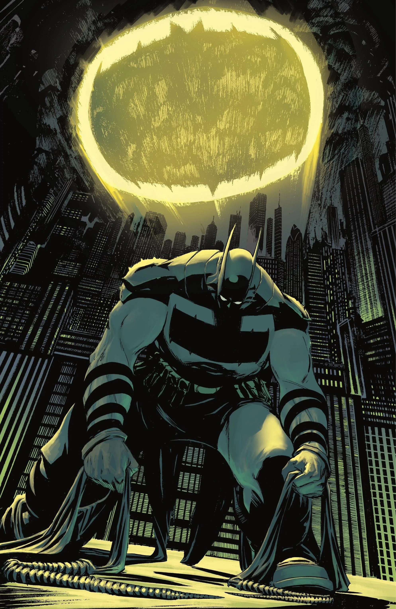
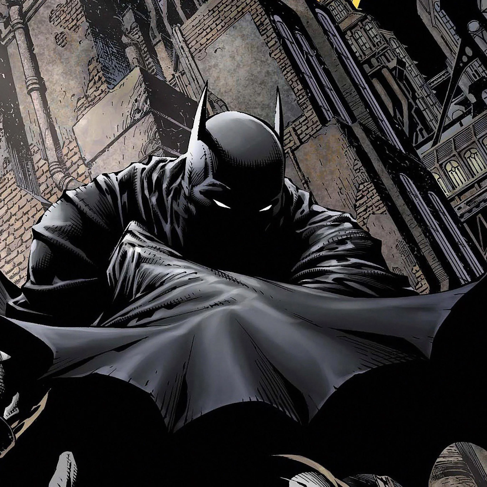
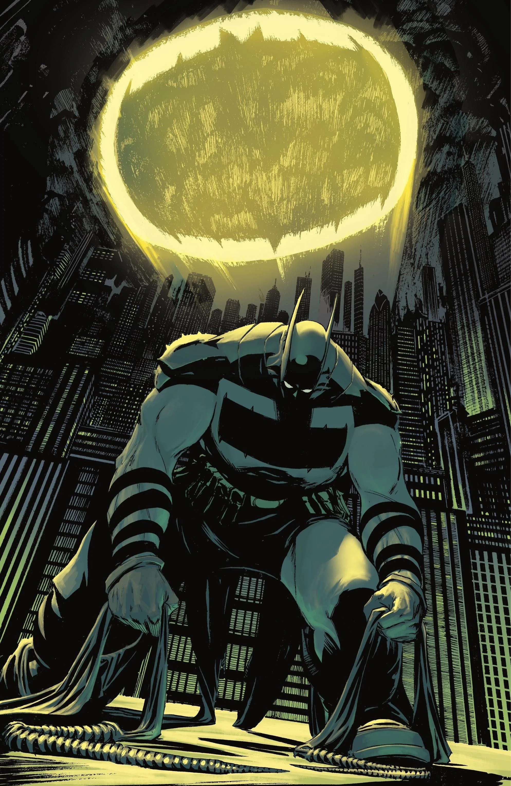
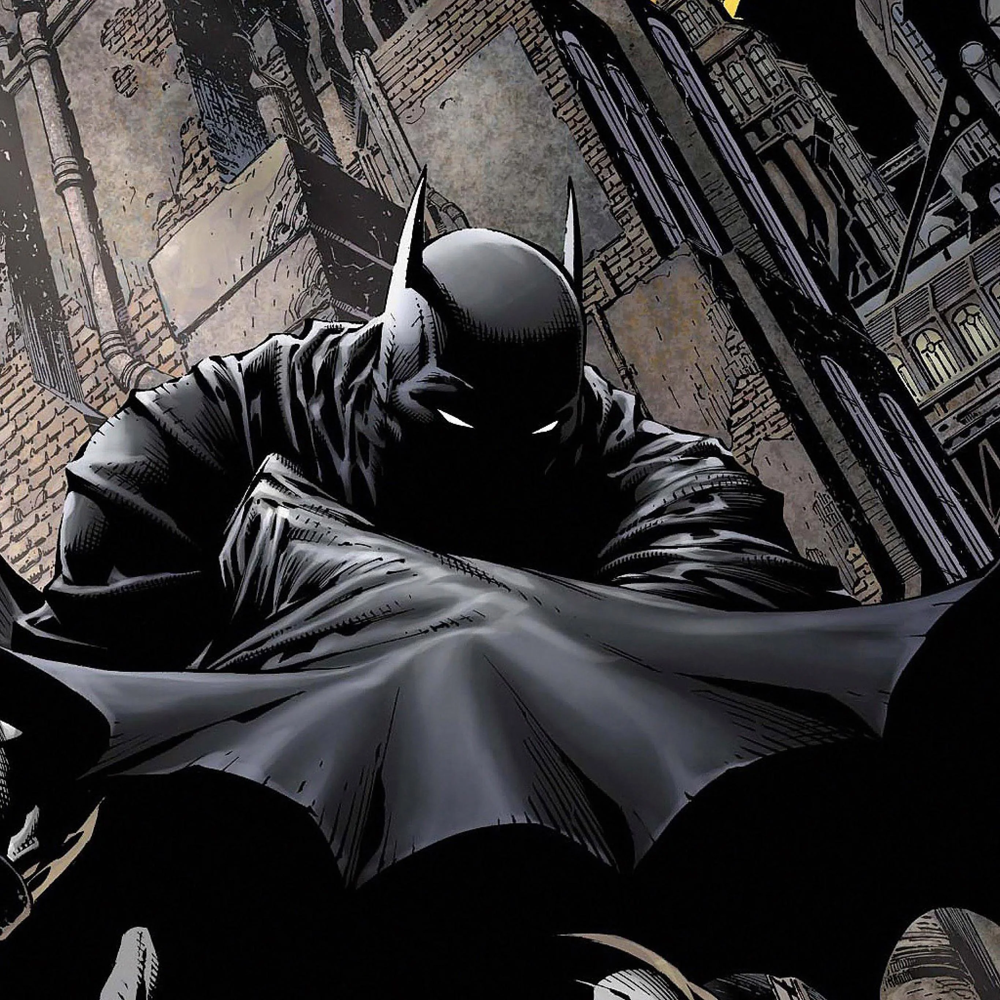

Quem é o Batman
Batman (Bruce Wayne) é um personagem da DC Comics e atua como Justiceiro de Gotham. Ele não tem super poderes, sua força está em treinamento tecnologia e riqueza (absurdo).
Em várias histórias, Gotham representa problemas sociais: desigualdade, corrupção, e violência urbana. Alguns quadrinhos usam o Batman como forma de crítica Social, mostrando como falhas nas instituições, interesses econômicos e autoritarismo afetam principalmente quem tem menos direitos e oportunidades.
Galeria
 >
>
>
>